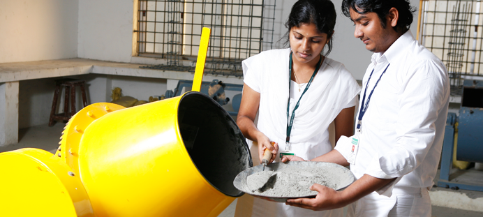

Welcome To
- Indian Journal of Civil & Environmental Sciences -
- 
Indian Journal OF - Civil & Environmental Sciences -
We are happy to bring out Volume 7, Issue I, Indian Journal of Civil & Environmental Sciences.
About us
PATRONS
of Indian Journal of Civil & Environmental Sciences
- Dr. V.kanagasabai, Vice Chancellor, BIHER
- Dr. M.Ponnavaiko, Pro Chancellor, BIHER
- Dr. K.P.Thooyamani, Pro-Vice chancellor, BIHER
- Dr. J.Hameed Hussain, Dean Engineering, BIHER
- Dr. N.Bhoominathan, Registrar, BIHER
- Dr. R.Venkatesh Babu, Dean Academics, BIHER
EDITOR
of Indian Journal of Civil & Environmental Sciences
- Prof.P.Dayakar Head department of civil, Bharath Institute of Higher Education and Research, Chennai-600073, India
EDITORIAL BOARD
of Indian Journal of Civil & Environmental Sciences
- Dr. Alexander Mc Leod Schofield, University of California at Berkeley,USA
- Dr.Vivien Esnault ,Lafarge Holcim R&D ,France.
- Prof. Viktor Mechtcherine, Technical University, Dresden, Germany.
- Dr.Jochen Toizer, RAPIDS Construction safety & Technology, Stuttgart, Germany.
- Dr.Timothy Wangles, Swiss Federal Institute of technology in Switzerland.
- Prof. Zongjin Li, Hong Kong, University of science & Technology, Hong Kong.
- Dr.B V Rangan, Australia.
- Prof. Koshy Varghese, IIT Madras, Chennai
- Dr. Saravana Kumar, IIT Madras, Chennai
- Dr P.N.Ragunathan Professor ,Annamalai University.
- Dr A.Leema Rose, Anna University.
- Dr J.Rvathy,Professor, B S Abdur Rahman University.
EDITORIAL MESSAGE
We are happy to bring out Volume 7, Issue I, Indian Journal of Civil & Environmental Sciences.
It is important to note the continual research process in the university and the interest shown by the staff members in contributing technical papers on the work done by them. It is a proven thing that research plays a significant role in academic institutions, with research and teaching completing each other. Research on multidisciplinary nature is likely to become more and more prominent, and it will be our Endeavour to encourage such contributions in our future issue.
I wish to place on record the assistance rendered in various ways by Mr.T.P.Meikandaan(Associate Professor, Civil) and Mr. D. S . Vijayan (Assistant Professor, Civil) in the preparation of the present issue of Journal. I wish to specially thank the members of the Editorial board for their continuous support.
I look forward to support from the Management and the staff members in bringing out the future issues with great ideas.
Prof.P.Dayakar
Editor
CONTENTS
- Volume 07 – Issue 01, January 2017 -
Click on the title to view the articles
EXPERIMENTAL INVESTIGATION ON USING CERAMIC WASTES IN CONCRETE
Aarthi Harini T
GROUNDWATER QUALITY STUDY IN AND AROUND TAMBARAM TALUK, KANCHEEPURAM DISTRICT
A.Ambica, B.Saritha, Gokia Changring, Bimol Singh N, Mana Rajen,
STUDY ON PHOTOCATALYTIC DEGRADATION OF CRYSTAL VIOLET DYE USING A SEMICONDUCTOR
B.Saritha , Dr.M.P.Chockalingam.
STUDY ON ACCIDENT PREVENTION IN CONSTRUCTION INDUSTRY USING COST BENEFIT ANALYSIS
T.P.Meikandaan, M.Hemapriya.
Contact Us
Contact Details
Want To Talk With Us?
# 173 Agharam Road Selaiyur,
Chennai - 600 073
Tamil Nadu, India
+ 91 - 44 - 2229 0742, 2229 0125
Email and Website:
E-mail: deanacademic@bharathuniv.ac.in ,
civil.bi.univ@gmail.com
Website: www.bharathuniv.ac.in